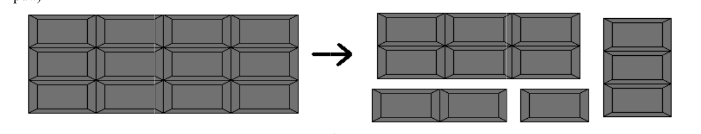

34th ICPC World Finals · Problem J
Chocolate in its many forms is enjoyed by millions of people around the world every day. It is a truly universal candy, available in virtually every country around the world.
You find that the only thing better than eating chocolate is to share it with friends. Unfortunately, your friends are very picky and have different appetites: some would like more and others less of the chocolate that you offer them. You have found it increasingly difficult to determine whether their demands can be met. It is time to write a program that solves the problem once and for all!
Your chocolate comes as a rectangular bar. The bar consists of same-sized rectangular pieces. To share the chocolate, you may break one bar into two pieces along a division between rows or columns of the bar. You may then repeatedly break the resulting pieces in the same manner. Each of your friends insists on a getting a single rectangular portion of the chocolate that has a specified number of pieces. You are a little bit insistent as well: you will break up your bar only if all of it can be distributed to your friends, with none left over.
For example, Figure 9 shows one way that a chocolate bar consisting of 3 × 4 pieces can be split into 4 parts that contain 6, 3, 2, and 1 pieces respectively, by breaking it 3 times. (This corresponds to the first sample input.)

The input consists of multiple test cases, each describing a chocolate bar to share. Each description starts with a line containing a single integer n (1 ≤ n ≤ 15), the number of parts into which the bar is supposed to be split. This is followed by a line containing two integers x and y (1 ≤ x, y ≤ 100), the dimensions of the chocolate bar. The next line contains n positive integers, giving the number of pieces that are supposed to be in each of the n parts.
The input is terminated by a line containing the integer zero.
For each test case, first display its case number. Then display whether it is possible to break the chocolate in the desired way: display “Yes” if it is possible, and “No” otherwise. Follow the format of the sample output.
4 3 4 6 3 2 1 2 2 3 1 5 0
Case 1: Yes Case 2: No